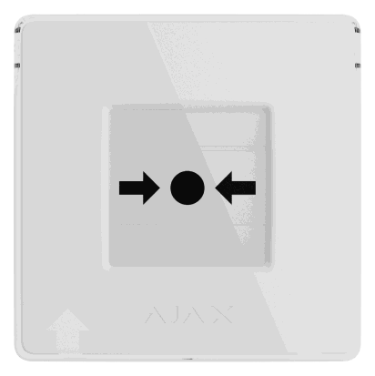

ManualCallPoint (Blue) Jeweller
Réf. fabricant MCP.B.J · Déclencheurs manuels d'alarme · Ajax Systems, marque partenaire
Sur devisÉtude, fourniture et installation par Active Sécurité 974
ManualCallPoint (Blue) Jeweller : bouton sans fil, programmable et réinitialisable de couleur bleue. Communication : sans fil. Matériel Ajax Systems sélectionné, installé et paramétré chez vous par Active Sécurité 974, partout à La Réunion.
- Étude et devis gratuits, sans engagement
- Installation chez vous, partout à La Réunion
- Partenaire agréé Ajax Systems
Caractéristiques
En bref.
Données issues de la fiche officielle du fabricant, reformulées. Fiche constructeur (nouvel onglet)
| Modèle | ManualCallPoint (Blue) Jeweller |
|---|---|
| Référence fabricant | MCP.B.J |
| Gamme | Residence Line |
| Type | Déclencheurs manuels d'alarme |
| Points clés |
|
| Coloris officiels | Bleu |
| Prix | Sur devis |
| Disponibilité | À confirmer lors du devis |
Dans la même famille
Autres produits.

